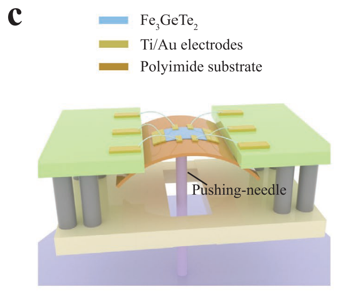

09. Strain-Sensitive Magnetization Reversal

Yu Wang, Cong Wang, Shi-Jun Liang, Zecheng Ma, Kang Xu, Xiaowei Liu, Lili Zhang, Alemayehu S. Admasu, Sang-Wook Cheong, Lizheng Wang, Moyu Chen, Zenglin Liu, Bin Cheng, Wei Ji, and Feng Miao [PDF]
Advanced Materials 32, 2004533 (2020)
By virtue of the layered structure, van der Waals (vdW) magnets are sensitive to the lattice deformation controlled by the external strain, providing an ideal platform to explore the one-step magnetization reversal that is still conceptual in conventional magnets due to the limited strain-tuning range of the coercive field. In this study, a uniaxial tensile strain is applied to thin flakes of the vdW magnet Fe3GeTe2 (FGT), and a dramatic increase of the coercive field (Hc) by more than 150% with an applied strain of 0.32% is observed. Moreover, the change of the transition temperatures between the different magnetic phases under strain is investigated, and the phase diagram of FGT in the strain-temperature plane is obtained. Comparing the phase diagram with theoretical results, the strain-tunable magnetism is attributed to the sensitive change of magnetic anisotropy energy. Remarkably, strain allows an ultrasensitive magnetization reversal to be achieved, which may promote the development of novel straintronic device applications.